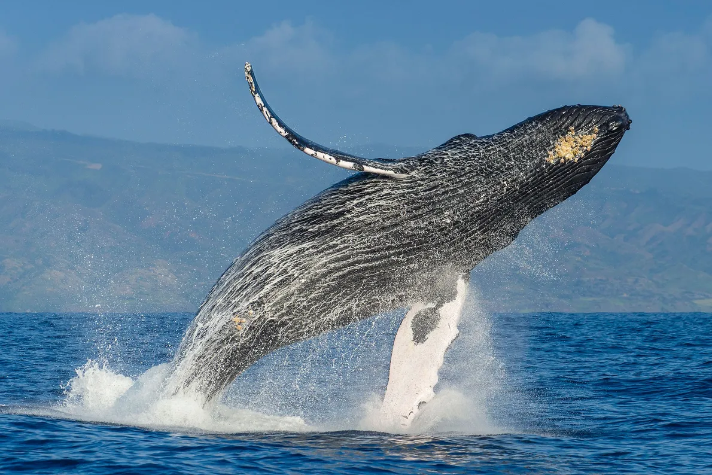
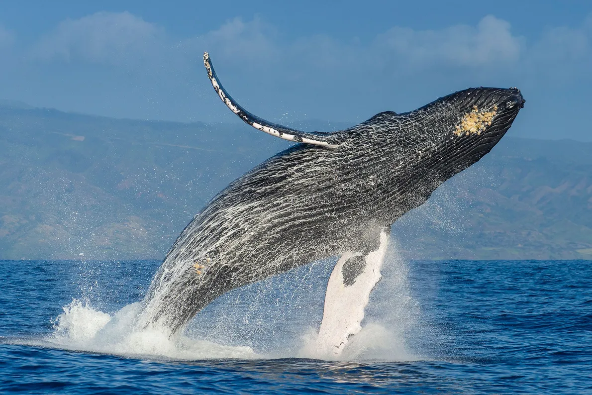
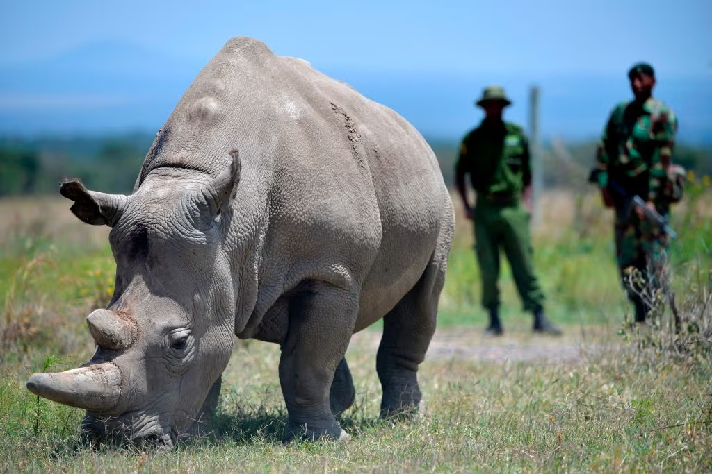
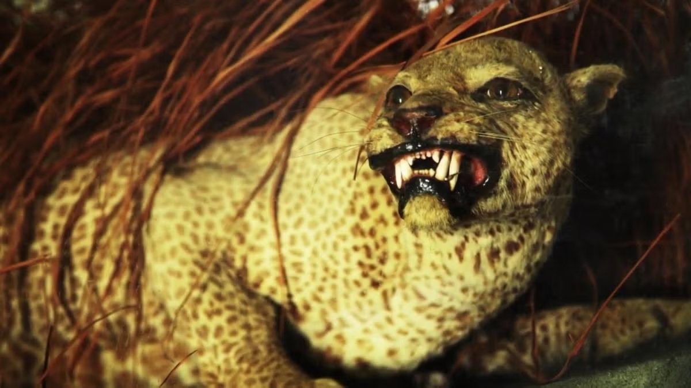
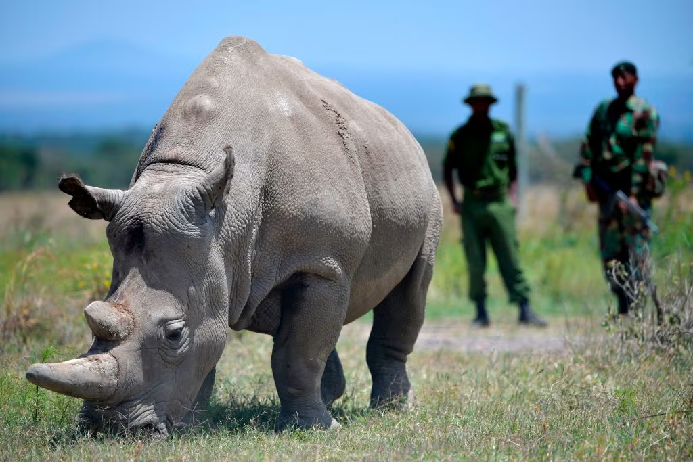
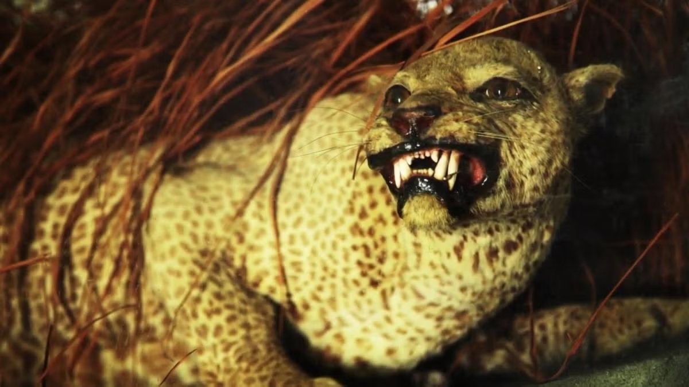

- Gorila de montaña
- Oso polar
- Tortuga laúd
solo quedan alrededor de 720 individuos en la naturaleza, amenazados por la caza ilegal y la pérdida de hábitat.
su hábitat ártico se está derritiendo por el calentamiento global, afectando su capacidad para cazar y reproducirse.
amenazada por capturas accidentales en redes de pesca, contaminación y el consumo de plástico.
- Panda gigante
- Rinoceronte blanco del sur
- Ballena jorobada
Clasificado como "en peligro" hasta 2016, pasó a "vulnerable" tras años de intensos esfuerzos de conservación en China, incluyendo la creación de reservas naturales y la restauración de hábitats. Actualmente, hay más de 1.850 individuos en libertad, con una población en constante crecimiento
A principios del siglo XX, solo quedaban unos cien ejemplares. Gracias a programas de protección, cría en cautividad y lucha contra la caza furtiva, su población alcanzó los 21.000 ejemplares en África. Aunque aún está clasificado como vulnerable, ya no está en peligro inminente de extinción.
Tras ser cazada masivamente (hasta 300.000 ejemplares entre los siglos XVIII y XX), su población se recuperó gracias a la prohibición internacional de la caza. En 2015 dejó de estar en peligro de extinción, y en 2018 su número superaba los 84.000 individuos.
 

- Pez de mano liso
- El rinoceronte blanco del norte
- Leopardo de Zanzíbar
En la imagen, el pez de mano rojo, pariente cercano del ya extinto pez de mano liso, que hace apenas 200 años abundaba en las aguas de Australia. Llamado así por su asombroso parecido con los brazos y las manos humanas, el pez de mano liso -que fue declarado extinto en 2020- también presentaba una espiga en la cabeza muy parecida a la de un mohicano (al igual que su primo que se muestra aquí.) Actualmente sólo se conoce un ejemplar conservado del extinto pez de mano liso en todo el mundo. Causa de la extinción: aunque se desconoce la causa definitiva de la extinción, los científicos especulan que la pérdida de hábitat y la pesca destructiva de otras especies marinas (como las vieiras) tuvieron que ver con su desaparición.
Los dos últimos rinocerontes blancos del norte que existen resultan ser hembras, ya que el último macho murió en marzo de 2018. Sudán, el macho de 45 años estaba bajo guardia armada en el Ol Pejeta Conservancy de Kenia cuando falleció a causa de la vejez y de una infección. Las dos hembras tampoco pueden dar a luz, lo que hace muy improbable la introducción de una nueva generación de la especie. Los científicos están trabajando en el uso de células sexuales extraídas y en la FIV para dar a luz a un rinoceronte blanco del norte creado en laboratorio. Causa de la extinción: la caza furtiva ha diezmado esta población y la pérdida de hábitat también ha contribuido a llevar al rinoceronte al borde de la extinción.
El leopardo de Zanzíbar, una de las varias subespecies de leopardo, tuvo su hogar en el archipiélago de Zanzíbar, en Tanzania. Todavía no está claro si este gran felino está técnicamente extinguido: hay avistamientos ocasionales no confirmados. Causa de la extinción: el leopardo se extinguió gracias a la creencia de que estos animales eran mantenidos por brujas; por esta razón, los lugareños los cazaron agresivamente. No ayudó que el gobierno estuviera en la campaña de exterminio de las criaturas. A mediados de los 90 hubo un efímero esfuerzo de conservación, pero se consideró que era demasiado poco y demasiado tarde.
 


